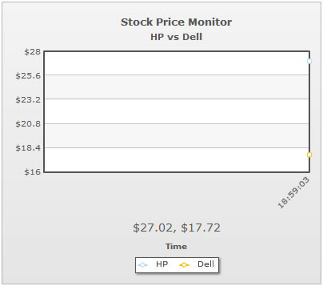

Here, we'll explore a few of the many visual and functional configurations possible for the chart. Specifically, we'll see how to:
- Apply pre-built or custom palettes to the chart
- Set custom y-axis lower limit and upper limit
- Specify different decimal precisions for the chart and axis
- Set custom canvas margins to accommodate larger y-axis values and labels
- Make use of chart element padding to avoid overlapping of x-axis labels
Let's see each of them one by one.
The data streaming charts offer 5 pre-defined color palettes for you to choose from. Each of these palettes is accessible by the numbers 1-5 respectively. To choose a palette, all you need to do is set:
Shown below are a few examples of palettes applied on our previous chart:
<chart palette='2'...> |
<chart palette='3'...> |
<chart palette='4'...> |
<chart palette='5'...> |
Additionally, you can also define an entire new palette by setting a single theme color using:
This will create a new palette derived from this color and then color the chart as under:
To change the color of each dataset's line or column, you can set:
<dataset color='FF5904' ..> or your hex code without #.
Similarly, the color of all visible elements on the chart is configurable either using XML attributes (defined in XML Sheet) or using the Styles feature.
If you already know the range of your real-time data and want to fix the chart limits accordingly, you can do so as under:
The above attributes set the lower limit of chart as 20 and upper limit as 40. This limit stays valid as long as all the historical and incremental data stay within this range. As soon as a value violates this limit, the chart automatically calculates a new y-axis limit based on the value and applies the same.
Shown below is an example of custom limits applied to our Google Stock Monitor chart:
As you can see above, the chart now uses our custom defined limits, instead of automatic limits (which usually was 29.35).
However, if any incremental value (real-time value) falls below 20 or above 40, the manual limits will be ignored and new limits will be calculated as per the incremental value.
The data streaming charts offer you decimal rounding controls for both the data values on chart and the y-axis values. You can do so using:
Here, the decimals attribute sets the decimal places for all values on chart apart from y-axis values. And, the yAxisValueDecimals attribute sets the decimal places for the y-axis values.
Shown below is the chart for above XML/JSON:
As you can see above, the y-axis values show a maximum of 1 decimal (or 0 if not required). Whereas, the chart values shown in tooltip show 2 decimals.
If you want to necessarily force decimals on both y-axis and chart values, you can set:
This will result in:
Apart from the chart margins, the data streaming charts in FusionWidgets also allow you to set canvas margins. This proves to be useful when the initial width required by the y-axis values changes with the incremental update.
In such cases, you can leave a bigger canvasLeftMargin to accommodate possible increase in the width of y-axis values. Shown below is an example:
This results in empty space at the left side of canvas, as shown below:
You can also set canvasRightMargin, canvasTopMargin & canvasBottomMargin.
This technique is also useful when you've placed more than 1 data streaming chart in the same page placed vertically over each other and want all of their canvases to start at the same x position. In that case, you can set the same width for each chart and then set same canvasLeftMargin.
Starting FusionWidgets XT, real-time charts automatically try to avoid overlapping of the incremental x-axis labels and the real-time values. A chart with an empty canvas (i.e., no historical data) automatically adds a padding between the canvas and the real-time values based on the vertical space occupied by the first updated x-axis label. This helps in avoiding overlapping of the x-axis labels and the real-time values as shown in the images below:
|  | |
| Chart with an empty canvas (i.e., no historical data). There is an empty space between the canvas and the x-axis name "Time" to accommodate the real-time values. |
Chart with the first update.
The chart automatically adds
vertical space between the canvas and the real-time values to further accommodate the x-axis labels and avoid overlapping. |
If you further want to add more vertical space between the x-axis labels and the real-time values, you can use the realTimeValuePadding attribute as shown below:
This will now result in:

Or, if you're not showing the real time value, you can set either xAxisNamePadding or legendPadding to create the required vertical space.
Important Note for users of FusionWidgets 3.1.1 or below:Prior to FusionWidgets XT, you were required to define realTimeValuePadding, xAxisNamePadding or legendPadding attributes to avoid overlapping of the x-axis labels and the real-time values/x-axis name/legend. Starting FusionWidgets XT, you are not required to do so. If you were using any of these attributes to avoid overlapping, you can remove them from your XML as the updated charts will take care of this automatically.